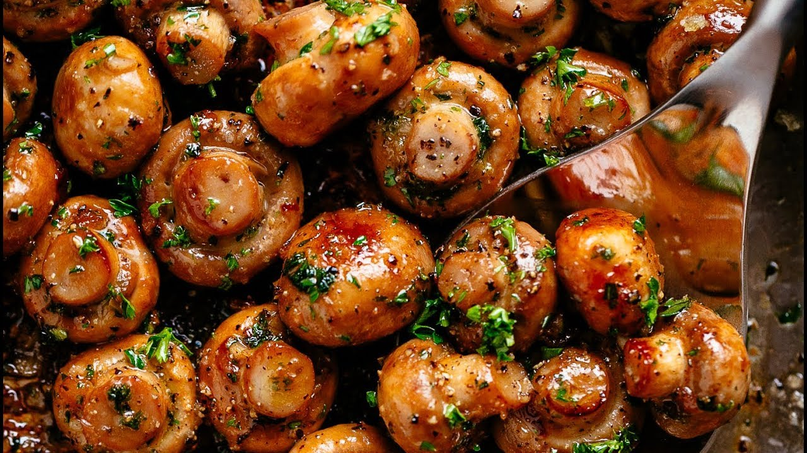

Garlic Mushrooms

Description
Enjoy these buttery, garlic mushrooms in just a couple of minutes!
Guaranteed to satisfy that garlic craving!
Ingredients
- 500g White Mushrooms
- 2tbps Butter
- 4 Garlic Cloves
- Chives (optional)
Steps
- Chop the mushrooms into thin slices.
- Heat a saucepan on a medium temperature.
- Place the butter into the saucepan and leave until melted.
- Add the chopped mushrooms into the saucepan.
- Using a garlic press, press the garlic cloves into the saucepan.
- Stir occasionally until mushrooms are golden brown.
- Serve! Bon appetit!
Click here to return to the recipes list!